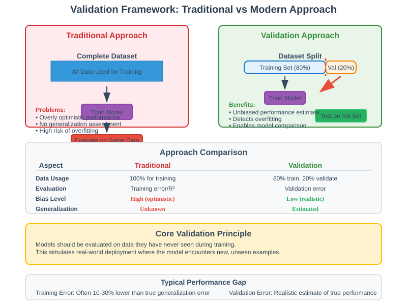
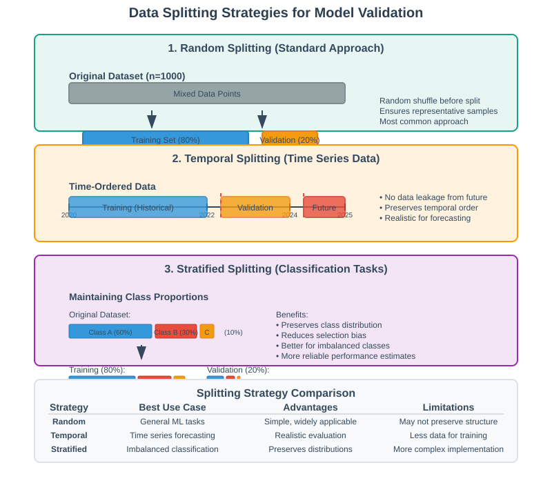
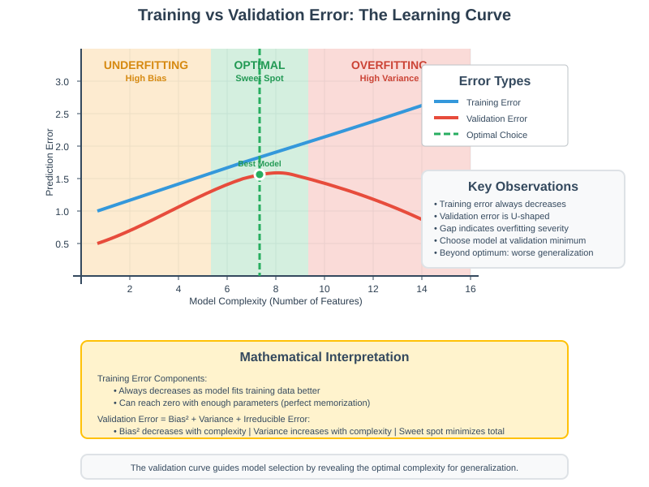
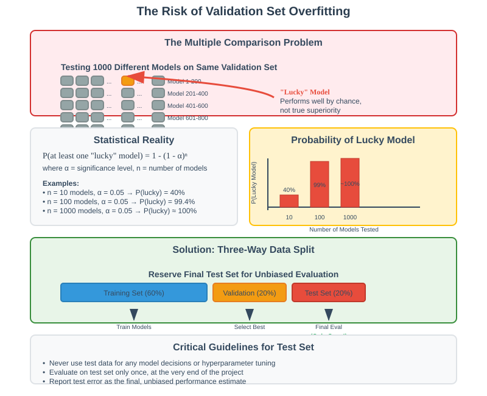
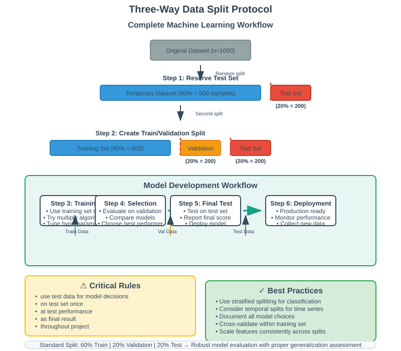

Performance Assessment through Validation
📋 Quick Navigation
- 🎯 Introduction
- 📊 The Validation Framework
- 🔄 Data Splitting Strategies
- 📈 Training vs Validation Error Analysis
- ⚠️ Avoiding Validation Set Overfitting
- 🏗️ Three-Way Data Split Protocol
- ⚖️ Limitations and Drawbacks
- 🛠️ Implementation Guidelines
- 📚 References & Further Reading
🎯 Introduction
Performance assessment through validation is a critical methodology in machine learning for evaluating model quality and preventing overfitting. As models become more complex with additional features and regularization techniques, systematic approaches are essential for selecting optimal configurations and hyperparameters.
Core Challenges in Model Selection
Modern machine learning faces several key decisions:
- Feature selection: Which variables to include or exclude
- Hyperparameter tuning: Setting regularization parameters (α in Ridge/Lasso)
- Model complexity: Choosing between simple and complex architectures
- Algorithm selection: Comparing different learning approaches
- Generalization assessment: Ensuring performance on unseen data
The Dual Objective
Effective model development requires balancing two competing goals:
Fitting Performance ← → Generalization Ability
(Low training error) (Low test error)
Fitting performance measures how well the model explains existing data (high R², low training error), while generalization ability determines performance on new, unseen data.
Mathematical Foundation
The validation framework addresses the fundamental bias-variance tradeoff by providing unbiased estimates of generalization error:
Generalization Error ≈ Validation Error (when properly implemented)
📊 The Validation Framework
Conceptual Overview
Validation replaces the naive approach of using all data for training with a systematic data partitioning strategy that reserves data for unbiased performance evaluation.

Traditional Approach vs Validation
| Approach | Data Usage | Performance Metric | Bias |
|---|---|---|---|
| Traditional | All data for training | Training error/R² | High (overly optimistic) |
| Validation | Split: Train + Validate | Validation error | Low (realistic estimate) |
Core Validation Principle
The validation principle simulates real-world deployment by testing models on data they haven't seen during training:
# Conceptual validation workflow
def validation_workflow(data, model_configs):
train_data, val_data = split_data(data)
best_model = None
best_score = float('inf')
for config in model_configs:
# Train on training set only
model = train_model(train_data, config)
# Evaluate on validation set
val_score = evaluate_model(model, val_data)
if val_score < best_score:
best_model = model
best_score = val_score
return best_model, best_score
Key Benefits
- Unbiased evaluation: Models tested on unseen data
- Systematic comparison: Consistent evaluation across models
- Overfitting detection: Identifies when complexity hurts generalization
- Hyperparameter optimization: Data-driven parameter selection
🔄 Data Splitting Strategies
Random Splitting Protocol
The standard approach divides data randomly into training and validation sets:

from sklearn.model_selection import train_test_split
# Basic train-validation split
X_train, X_val, y_train, y_val = train_test_split(
X, y,
test_size=0.2, # 20% for validation
random_state=42, # Reproducible split
stratify=y # Maintain class proportions
)
print(f"Training set: {len(X_train)} samples")
print(f"Validation set: {len(X_val)} samples")
Split Ratio Guidelines
| Dataset Size | Training % | Validation % | Rationale |
|---|---|---|---|
| Small (<1K) | 70-80% | 20-30% | Need maximum training data |
| Medium (1K-10K) | 80% | 20% | Standard split |
| Large (>10K) | 85-90% | 10-15% | Validation set still large enough |
Advanced Splitting Considerations
Temporal Data
# For time series: use temporal splits
def temporal_split(data, split_date):
train = data[data.date < split_date]
val = data[data.date >= split_date]
return train, val
Stratified Splitting
# Maintain class distribution in classification
X_train, X_val, y_train, y_val = train_test_split(
X, y, stratify=y, test_size=0.2
)
Group-Based Splitting
# Prevent data leakage for grouped data
from sklearn.model_selection import GroupShuffleSplit
splitter = GroupShuffleSplit(n_splits=1, test_size=0.2)
train_idx, val_idx = next(splitter.split(X, y, groups=patient_ids))
📈 Training vs Validation Error Analysis
The Characteristic Learning Curves
Understanding the relationship between model complexity and error on different data sets is crucial for optimal model selection:

Error Behavior Patterns
Training Error (Always Decreasing)
- Monotonic decrease: More features always reduce training error
- Perfect fit possible: With enough parameters, training error → 0
- Overly optimistic: Does not reflect generalization ability
Validation Error (U-Shaped)
- Initial decrease: Additional relevant features improve generalization
- Optimal point: Best balance of bias and variance
- Subsequent increase: Overfitting dominates as complexity grows
Mathematical Analysis
The expected validation error can be decomposed as:
E[Validation Error] = Bias² + Variance + Irreducible Error
Where: - Bias²: Error from model assumptions (decreases with complexity) - Variance: Error from sensitivity to training data (increases with complexity) - Irreducible Error: Inherent noise in the data (constant)
Identifying Optimal Complexity
def find_optimal_complexity(X, y, complexity_range):
train_errors = []
val_errors = []
X_train, X_val, y_train, y_val = train_test_split(X, y, test_size=0.2)
for complexity in complexity_range:
# Train model with given complexity
model = create_model(complexity)
model.fit(X_train, y_train)
# Calculate errors
train_pred = model.predict(X_train)
val_pred = model.predict(X_val)
train_errors.append(mean_squared_error(y_train, train_pred))
val_errors.append(mean_squared_error(y_val, val_pred))
# Find optimal complexity
optimal_idx = np.argmin(val_errors)
optimal_complexity = complexity_range[optimal_idx]
return optimal_complexity, train_errors, val_errors
Practical Interpretation
| Region | Training Error | Validation Error | Interpretation | Action |
|---|---|---|---|---|
| Underfitting | High | High | Model too simple | Add complexity |
| Optimal | Medium | Minimum | Perfect balance | Select this model |
| Overfitting | Low | High | Model too complex | Reduce complexity |
⚠️ Avoiding Validation Set Overfitting
The Subtle Overfitting Problem
When comparing many models (e.g., 1000 different algorithms), there's a risk that one might accidentally perform well on the validation set due to random chance rather than true superiority.

Statistical Perspective
With multiple comparisons, the probability of finding a "lucky" model increases:
P(at least one lucky model) = 1 - (1 - α)^n
Where: - α: Significance level (e.g., 0.05) - n: Number of models tested
For n = 1000 models: P(lucky model) ≈ 1.0 (almost certain!)
The Test Set Solution
To combat validation set overfitting, reserve a final test set for ultimate evaluation:
def robust_model_selection(X, y, model_candidates):
# Three-way split
X_temp, X_test, y_temp, y_test = train_test_split(X, y, test_size=0.2)
X_train, X_val, y_train, y_val = train_test_split(X_temp, y_temp, test_size=0.25)
best_model = None
best_val_score = float('inf')
# Model selection on validation set
for model_config in model_candidates:
model = train_model(X_train, y_train, model_config)
val_score = evaluate_model(model, X_val, y_val)
if val_score < best_val_score:
best_model = model
best_val_score = val_score
# Final evaluation on test set
test_score = evaluate_model(best_model, X_test, y_test)
return best_model, best_val_score, test_score
Multiple Testing Corrections
When appropriate, apply statistical corrections:
from statsmodels.stats.multitest import multipletests
# Bonferroni correction for multiple comparisons
def corrected_model_selection(p_values, alpha=0.05):
rejected, p_corrected, _, _ = multipletests(
p_values, alpha=alpha, method='bonferroni'
)
return rejected, p_corrected
🏗️ Three-Way Data Split Protocol
Standard Three-Way Division
The robust machine learning workflow uses three distinct data sets:

Data Set Roles and Sizes
| Data Set | Typical Size | Purpose | Usage Frequency |
|---|---|---|---|
| Training | 60-70% | Model fitting | Every model iteration |
| Validation | 15-20% | Model selection | Every model comparison |
| Test | 15-20% | Final evaluation | Once only |
Implementation Example
from sklearn.model_selection import train_test_split
def three_way_split(X, y, test_size=0.2, val_size=0.2, random_state=42):
"""
Split data into train/validation/test sets
Parameters:
- test_size: Proportion for test set
- val_size: Proportion of remaining data for validation
"""
# First split: separate test set
X_temp, X_test, y_temp, y_test = train_test_split(
X, y, test_size=test_size, random_state=random_state
)
# Second split: train and validation from remaining data
X_train, X_val, y_train, y_val = train_test_split(
X_temp, y_temp,
test_size=val_size/(1-test_size), # Adjust for remaining data
random_state=random_state
)
print(f"Training: {len(X_train)} samples ({len(X_train)/len(X)*100:.1f}%)")
print(f"Validation: {len(X_val)} samples ({len(X_val)/len(X)*100:.1f}%)")
print(f"Test: {len(X_test)} samples ({len(X_test)/len(X)*100:.1f}%)")
return X_train, X_val, X_test, y_train, y_val, y_test
Workflow Protocol
def complete_ml_workflow(X, y, model_configs):
# Step 1: Three-way split
X_train, X_val, X_test, y_train, y_val, y_test = three_way_split(X, y)
# Step 2: Model development and selection
best_model = None
best_config = None
best_val_error = float('inf')
for config in model_configs:
# Train model
model = create_model(config)
model.fit(X_train, y_train)
# Validate model
val_predictions = model.predict(X_val)
val_error = calculate_error(y_val, val_predictions)
# Track best model
if val_error < best_val_error:
best_model = model
best_config = config
best_val_error = val_error
# Step 3: Final test evaluation
test_predictions = best_model.predict(X_test)
final_test_error = calculate_error(y_test, test_predictions)
print(f"Selected model: {best_config}")
print(f"Validation error: {best_val_error:.4f}")
print(f"Final test error: {final_test_error:.4f}")
return best_model, final_test_error
Critical Guidelines
- Test set sanctity: Never use test data for any model decisions
- Single evaluation: Evaluate on test set only once, at the very end
- Honest reporting: Report test error as the final performance estimate
- Documentation: Keep clear records of all model choices and their validation scores
⚖️ Limitations and Drawbacks
Data Efficiency Concerns
Validation approaches have inherent limitations that become problematic with small datasets:
Primary Drawbacks
1. Data Waste
- Reduced training data: 20-40% of data reserved for evaluation
- Impact on small datasets: Particularly problematic when n < 1000
- Performance degradation: Less training data can hurt model quality
2. Random Variation
- Split sensitivity: Different random splits can favor different models
- Inconsistent results: Same algorithm may win/lose based on random chance
- Reproducibility issues: Results depend on random seed selection
Quantifying the Impact
def analyze_split_sensitivity(X, y, model_A, model_B, n_trials=100):
"""
Analyze how sensitive model selection is to random splits
"""
model_A_wins = 0
model_B_wins = 0
for trial in range(n_trials):
# Random split for this trial
X_train, X_val, y_train, y_val = train_test_split(
X, y, test_size=0.2, random_state=trial
)
# Train both models
model_A.fit(X_train, y_train)
model_B.fit(X_train, y_train)
# Evaluate on validation set
score_A = model_A.score(X_val, y_val)
score_B = model_B.score(X_val, y_val)
if score_A > score_B:
model_A_wins += 1
else:
model_B_wins += 1
print(f"Model A wins: {model_A_wins}/{n_trials} ({model_A_wins/n_trials*100:.1f}%)")
print(f"Model B wins: {model_B_wins}/{n_trials} ({model_B_wins/n_trials*100:.1f}%)")
return model_A_wins / n_trials
When Validation Becomes Problematic
| Dataset Size | Primary Concern | Recommended Approach |
|---|---|---|
| n < 100 | Severe data waste | Leave-one-out CV or Bootstrap |
| 100 ≤ n < 1000 | Moderate data waste | k-fold cross-validation |
| n ≥ 1000 | Split variance | Standard validation OK |
Mitigation Strategies
Cross-Validation
from sklearn.model_selection import cross_val_score
# k-fold cross-validation reduces data waste
scores = cross_val_score(model, X, y, cv=5, scoring='neg_mean_squared_error')
mean_score = scores.mean()
std_score = scores.std()
print(f"CV Score: {mean_score:.4f} (±{std_score:.4f})")
Repeated Validation
def repeated_validation(X, y, model, n_repeats=10):
"""
Average results across multiple random splits
"""
scores = []
for i in range(n_repeats):
X_train, X_val, y_train, y_val = train_test_split(
X, y, test_size=0.2, random_state=i
)
model.fit(X_train, y_train)
score = model.score(X_val, y_val)
scores.append(score)
return np.mean(scores), np.std(scores)
🛠️ Implementation Guidelines
Scikit-learn Implementation
Basic Validation Pipeline
from sklearn.model_selection import train_test_split, GridSearchCV
from sklearn.linear_model import Ridge
from sklearn.metrics import mean_squared_error, r2_score
import numpy as np
def validation_pipeline(X, y):
"""
Complete validation pipeline for model selection
"""
# Three-way split
X_temp, X_test, y_temp, y_test = train_test_split(
X, y, test_size=0.2, random_state=42
)
X_train, X_val, y_train, y_val = train_test_split(
X_temp, y_temp, test_size=0.25, random_state=42
)
# Hyperparameter tuning with validation set
alphas = np.logspace(-4, 4, 50)
best_alpha = None
best_val_score = float('inf')
for alpha in alphas:
model = Ridge(alpha=alpha)
model.fit(X_train, y_train)
val_pred = model.predict(X_val)
val_mse = mean_squared_error(y_val, val_pred)
if val_mse < best_val_score:
best_alpha = alpha
best_val_score = val_mse
# Train final model with best hyperparameter
final_model = Ridge(alpha=best_alpha)
final_model.fit(X_train, y_train)
# Final evaluation on test set
test_pred = final_model.predict(X_test)
test_mse = mean_squared_error(y_test, test_pred)
test_r2 = r2_score(y_test, test_pred)
print(f"Best alpha: {best_alpha:.4f}")
print(f"Validation MSE: {best_val_score:.4f}")
print(f"Test MSE: {test_mse:.4f}")
print(f"Test R²: {test_r2:.4f}")
return final_model, test_mse
Advanced Model Comparison
from sklearn.ensemble import RandomForestRegressor
from sklearn.svm import SVR
from sklearn.linear_model import Lasso, Ridge
def compare_multiple_models(X, y):
"""
Compare multiple model types using validation
"""
X_train, X_val, X_test, y_train, y_val, y_test = three_way_split(X, y)
# Define models to compare
models = {
'Ridge': Ridge(alpha=1.0),
'Lasso': Lasso(alpha=0.1),
'Random Forest': RandomForestRegressor(n_estimators=100, random_state=42),
'SVR': SVR(kernel='rbf', C=1.0)
}
results = {}
for name, model in models.items():
# Train model
model.fit(X_train, y_train)
# Validate
val_pred = model.predict(X_val)
val_mse = mean_squared_error(y_val, val_pred)
val_r2 = r2_score(y_val, val_pred)
results[name] = {
'validation_mse': val_mse,
'validation_r2': val_r2,
'model': model
}
print(f"{name:15} | Val MSE: {val_mse:.4f} | Val R²: {val_r2:.4f}")
# Select best model based on validation performance
best_model_name = min(results.keys(), key=lambda k: results[k]['validation_mse'])
best_model = results[best_model_name]['model']
# Final test evaluation
test_pred = best_model.predict(X_test)
test_mse = mean_squared_error(y_test, test_pred)
test_r2 = r2_score(y_test, test_pred)
print(f"\nSelected Model: {best_model_name}")
print(f"Final Test MSE: {test_mse:.4f}")
print(f"Final Test R²: {test_r2:.4f}")
return best_model, results
Cross-Validation Alternative
from sklearn.model_selection import cross_validate
def cross_validation_comparison(X, y, models):
"""
Use cross-validation instead of simple train-val split
"""
cv_results = {}
for name, model in models.items():
# 5-fold cross-validation
cv_scores = cross_validate(
model, X, y,
cv=5,
scoring=['neg_mean_squared_error', 'r2'],
return_train_score=True
)
cv_results[name] = {
'test_mse_mean': -cv_scores['test_neg_mean_squared_error'].mean(),
'test_mse_std': cv_scores['test_neg_mean_squared_error'].std(),
'test_r2_mean': cv_scores['test_r2'].mean(),
'test_r2_std': cv_scores['test_r2'].std(),
}
print(f"{name}:")
print(f" CV MSE: {cv_results[name]['test_mse_mean']:.4f} ± {cv_results[name]['test_mse_std']:.4f}")
print(f" CV R²: {cv_results[name]['test_r2_mean']:.4f} ± {cv_results[name]['test_r2_std']:.4f}")
return cv_results
Performance Monitoring
| Metric | Training Set | Validation Set | Test Set | Interpretation |
|---|---|---|---|---|
| MSE | Always decreasing | U-shaped curve | Single final value | Lower is better |
| R² | Always increasing | Inverted U-shape | Single final value | Higher is better |
| MAE | Always decreasing | U-shaped curve | Single final value | Lower is better |
📚 References & Further Reading
📖 Foundational Literature
- Cross-Validation: A Review (Arlot & Celisse, 2010) - Comprehensive survey of validation techniques
- The Elements of Statistical Learning (Hastie et al.) - Chapter 7: Model Assessment and Selection
- Model Selection and Model Averaging (Claeskens & Hjort, 2008) - Advanced theoretical treatment
🎓 Comprehensive Resources
- Pattern Recognition and Machine Learning (Bishop) - Chapter 1.3: Model Selection
- Introduction to Statistical Learning (James et al.) - Chapter 5: Resampling Methods
- Machine Learning: A Probabilistic Perspective (Murphy) - Chapter 6: Frequentist Statistics
🔧 Implementation Resources
- Scikit-learn Model Selection Guide - Comprehensive validation toolkit
- MLxtend Model Selection - Advanced evaluation techniques
- Yellowbrick Model Selection Visualizers - Validation curve visualization
🤖 Advanced Topics & Research
- Nested Cross-Validation: Unbiased model selection with hyperparameter tuning
- Time Series Validation: Forward chaining and walk-forward analysis
- Stratified Sampling: Maintaining distribution in classification problems
- Group Cross-Validation: Handling correlated samples and data leakage
📊 Specialized Validation Techniques
- Bootstrap Methods (Efron & Tibshirani, 1994) - Alternative to cross-validation
- Permutation Tests for Model Validation - Statistical significance testing
- Learning Curves Analysis - Diagnosing learning problems
🔬 Recent Developments
- Conformal Prediction: Uncertainty quantification with validation sets
- Distribution Shift Detection: Identifying when validation assumptions break
- Meta-Learning for Model Selection: Learning to choose models across tasks
Created with ❤️ for the Machine Learning Community
Last Updated: September 2025